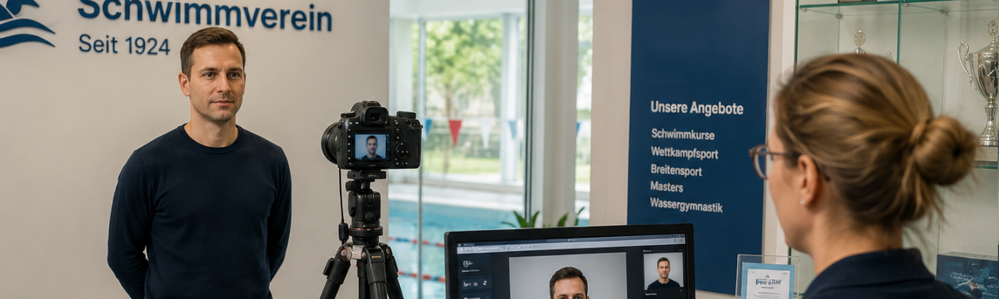

5,600 membership photos, one clear process.
A practical capture system that connected each photo with the right member and kept a high-volume production run moving under a fixed deadline.
Discuss a similar project
A large production task with little room for mix-ups.
The club needed current photos for thousands of membership cards within a short seasonal window. Capturing images was only one part of the challenge: every file also had to be matched to the correct person, checked, and made available for the next production step.
A manual naming and sorting process would have been slow and vulnerable to errors. The team needed a workflow that remained easy to operate even when many people were waiting.
I designed the process around the people at the capture station.
I built a focused application that guides staff through member selection, photo capture, and confirmation. The system handles association and file preparation in the background, reducing the number of decisions and manual actions required for each person.
Because the deadline was fixed, I prioritized the essential journey, tested it against real working conditions, and made the status of each step immediately visible.
A repeatable flow that supported the full card run.
The solution enabled the organization to process the required photos and prepare 5,600 membership cards. Staff could concentrate on the people in front of them instead of file names and folders, while consistent handling reduced follow-up work.
This project shows how I respond to time pressure: simplify the workflow, focus on operational reliability, and deliver a tool that non-technical users can adopt quickly.